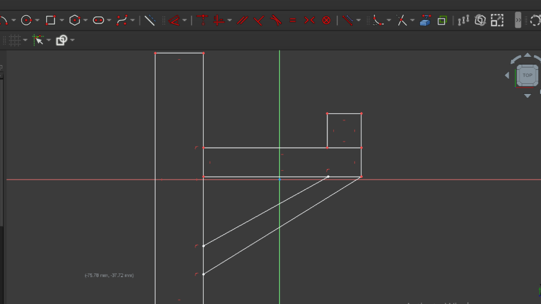

Day 02 – Digital Modeling for Fabrication
Overview
Digital Modeling for Fabrication refers to the process of creating accurate digital 2D or 3D models using computer-aided design (CAD) tools, specifically intended for digital fabrication technologies.
- The digital model defines the shape, dimensions, and features of an object
- It accounts for material properties, tolerances, joints, and assembly methods
- The model is directly used to generate machine instructions for tools such as laser cutters, CNC routers, and 3D printers
1. Printable Product for Experiencing the 3D Machine
Images

Activity 1 – FreeCAD Model
Design Characteristics
- Two flat faces at 90°
- Two circular holes for screws or bolts
- Simple geometry with no complex curves
- One filleted corner for safety and manufacturability
Images





2. Activity 2 – Inkscape Model
Press-Fit Box Panel (2D Vector)
Task 1: Design Characteristics
- A flat rectangular panel
- Rectangular slots cut into the edges
- Slots sized to match material thickness
- Designed to slide and lock with other panels
- Entirely 2D vector geometry
Image

3. Modeling Approach (Inkscape) of Final Product
Inkscape is an open-source vector graphics design software widely used for 2D digital modeling in fabrication workflows, especially for laser cutting, vinyl cutting, and CNC engraving.
In this modeling approach, designs are created as vector paths rather than raster images, ensuring precise, scalable, and machine-readable geometry.
Inkscape allows accurate control of dimensions, line thickness, colors, and layers, which are essential for defining cutting, engraving, and scoring operations.
Images